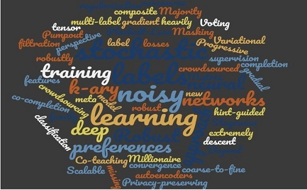

Bo Han
Home
Research
My research interests lie in machine learning and its real-world applications. My long-term goal is to develop intelligent systems, which can learn from a massive volume of complex (uncertain, adversarial, private, and interactive) data. Recently, I develop core machine learning methodology, including weakly-supervised learning, deep learning, adversarial learning, privacy-preserving learning, and interactive learning. Besides, I am actively finding collaborators to apply our fundamental research into the healthcare domain.
My current research work center around four major themes:
Robust Machine Learning: How can we train complex models robustly using weakly-supervised information? Security and Privacy in Machine Learning: How can we protect the security and privacy in training complex models? Interactive Machine Learning: How can we reason about intelligent systems that learn from and interact with humans? Interdisciplinary Problems: How can we apply the above fundamental research to the healthcare domain?

Selected Recent Publications
B. Han, G. Niu, J. Yao, X. Yu, M. Xu, I.W. Tsang and M. Sugiyama. Pumpout: A meta approach for robustly training deep neural networks with noisy labels, 2018, [PDF]. B. Han, Q. Yao, X. Yu, G. Niu, M. Xu, W. Hu, I.W. Tsang and M. Sugiyama. Co-teaching: Robust training of deep neural networks with extremely noisy labels. Advances in Neural Information Processing Systems, 2018, [PDF]. B. Han, J. Yao, G. Niu, M. Zhou, I.W. Tsang, Y. Zhang and M. Sugiyama. Masking: A new perspective of noisy supervision. Advances in Neural Information Processing Systems, 2018, [PDF]. B. Han, Q. Yao, Y. Pan, I.W. Tsang, X. Xiao, Q. Yang, and M. Sugiyama. Millionaire: A hint-guided approach for crowdsourcing. Machine Learning Journal, 2018, [PDF]. Y. Pan, B. Han, and I.W. Tsang. Stagewise learning for noisy k-ary preferences. Machine Learning Journal, 2018, [PDF]. B. Han, Y. Pan and I.W. Tsang. Robust Plackett-Luce model for k-ary crowdsourced preferences. Machine Learning Journal, 2017, [PDF].
Representative Talks
Millionaire: A Hint-guided Approach for Crowdsourcing. ACML'18, China, 2018.11.
The Next-Generation Engine: When Robust Deep Learning Meets Noisy Labels. University of Tokyo, Japan, 2018.10.
Robust Deep Learning with Noisy Labels. National University of Singapore, Singapore, 2018.9.
Robust Deep Learning with Noisy Labels. LAMDA, Nanjing University, China, 2018.9.
Learning from Imperfect Supervision. Hong Kong Baptist University, Hong Kong, 2018.5.
|